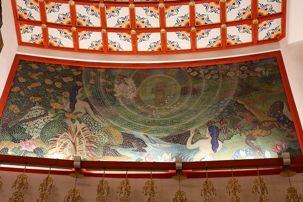

姫路市に名古山霊苑という巨大な霊園がある。
姫路のシンボル、姫路城から北西に1キロほど離れた丘陵地にあるのだが、姫路城域と同規模の広さを誇りながらその存在は地元の方以外にはあまり知られていない。
ま、霊苑だから当然といえば当然なのだが。
ところがこの霊苑、色んな意味で規格外なのだ。
まずはその規模。約30ha東京ドーム7.8個分の敷地を有する巨大なもの。
開苑は昭和28年。姫路市の戦後復興計画の一翼を担うビッグプロジェクトであったといえよう。
さらにこの霊苑、
市営なのにインド政府からお釈迦様の遺骨である仏舎利をいただいちゃっているのである。
え〜と。↑の一文、隅から隅までツッコミどころ満載なのでどこから説明したらいいのか迷うところだ。
まずは仏舎利について説明します？
仏舎利とはこのサイトを日頃ご覧になっている方であれば今更説明は要らないと思うが
お釈迦様の遺骨である。
え？お釈迦様の遺骨なんて本当にあるの？…というツッコミに関してはここでは無視します。宗教上あることになってるんです！
このサイトでもいくつか紹介してきたが日本だけでも結構あちこちに仏舎利は分骨されている。
ちなみに世界中に分骨したお釈迦様の骨、仏舎利の総量は一説には5トンあるとか。
まあ、お釈迦様は言い伝えによると1丈6尺あるというから骨もそれくらいあるの…かなぁ？
…話は長くなるので追々説明するとして、まずは本丸の仏舎利塔へと歩を進めようではないか。
如何であろう、この雄姿。
古代インドの様式を参考にしたストゥーパ。
中央の巨大なストゥーパを6つの小塔が囲っている。
さらにその仏舎利塔の周りには4つのストゥーパ型の納骨堂が建っており、荘厳な曼荼羅のような世界を作り上げている。

仏舎利塔の前には広大な噴水があり、その前にはストゥーパには似つかわしくない巨大な和風の灯篭が一対建っている。
その水の供給源はこちら。象さんだ。
あくまでもインドチックな意匠に満ちている。
香炉もデカい。
そして仏舎利塔の内部に入ってみることにする。
ここは縦覧料を払えば誰でも内部を見学することができるのだ。
一歩中に入る。
見上げる。
唖然…である。
ドームの内側一杯を使い切った見事な空間。
スゲー！まさかこんな事になっているとは！
あまりの荘厳さにしばらく口をあんぐりしたまま上を眺めるしか出来なかった。
天井のドームには巨大な鳳凰が。
絵ではなく、天上に貼り付けられている。
中央には金色に輝く御厨子が鎮座している。
その中央にはインドのネール首相から贈られたという仏舎利が祀られている。
真ん中の塔の先端のガラスの球体の中にある、というのだが、良く判りませんでした。
私はこれまでお釈迦様の真骨、と称されるモノを世界中で見てきたが、ああ、コレはお骨だねー、と実感したことは一度もないです。
ウルトラありがたい聖遺物だけにほんのちょびっとなんでしょうねぇ…。
ドームの下部、鳳凰の下には中央にお釈迦様、その周りには釈迦十大弟子が並んでいる。
フロアレベルに目を移すと輪宝の左右に仁王像。
そしてそれを取り囲むように各宗派の開祖が並んでいる。
中央に聖徳太子。
禅宗開祖、達磨大師。
浄土真宗開祖、親鸞上人
真言宗開祖、弘法大師、空海
日蓮宗開祖、日蓮上人
浄土宗開祖、法然上人、源空
天台宗開祖、伝教大師、最澄
月光菩薩（日光菩薩もあった）
もう、オールスター揃いでありがたさ大爆発なのだが、それだけにあらず。
各開祖像の上には釈迦一代記のタイルモザイクが並んでいるのだ。
降兜卒。釈迦が象に乗ってやって現世にやって来る、の図。
託胎。仏教における受胎告知の図。

降誕。釈迦生誕の図。

（多分）出家の図。
修行を邪魔する降魔の図。

初転法輪。説法の図。
涅槃。入滅の図。
涅槃図だけは膨大なボリュームで描かれていた。
ここが死者の眠る墓所だからだろうか。
圧倒的なスケールで仏教の歴史を彫像やモザイクで表現しきった凄い施設だった。
この施設が210円で見られるなんて、何て高コスパなんだ、と言わずにはいられない施設だった。
だって
オール仏教ミラーボール状態だよ！凄くない？
正直言って
姫路城行くよりよっぽど面白いと思うよ、俺はね。君はどう？どう？どう？
さて。
一旦落ち着こうか…。
この素敵すぎる仏舎利塔については実に興味深い歴史が交差している。
まず気になるのがこの仏舎利塔は宗教的な施設だが市営の霊園の中にあるけどイイの？という点。
ご存知の通り、日本には政教分離の原則というものがあり、公営の施設が特定の宗教に関与してはイケナイことになっているのだ。
え？知らなかった？…それは問題ですぞ。
これは日本の戦後政策の中でもかなり重要なお約束なのですよ。
何故か？それは戦前に国家神道を奉じて政府が宗教を国策に転用したことが問題視されたからである。
（異論反論あるかと思いますが枝葉述べるとキリがないからここはザックリいかせてもらうよ）。
この霊苑が開設されたのが昭和28年。
まだまだ戦中の記憶が生々しい、どころか自分の身内が戦争で亡くなって間もない時期であるにもかかわらず、民主主義だ武装放棄だ政教分離だ財閥解体だ農地解放だと怒涛のように新しい概念が入り込んできた時期。
当然、戦後の憲法に照らし合わせては姫路市の施設にこのような仏教バリバリの施設を建立することはまかりならんのである。
で、一計を案じた訳です。
この仏舎利塔はあくまでも
民間の有志による団体が建立し、市に寄贈した、という体裁をとっているのだ。
今でもこの仏舎利塔の管理は任意団体が行っており、市内の仏教団体により各種法話や説法が行われている。
ここの仏舎利塔の存在はよく戦後日本法曹史の政教分離政策における対策の実例としてよく挙げられたりもする。
今だともう少し他の宗教に配慮した部分もあったのかもしれないが、戦後日本で墓と言えばそりゃ仏教でしょう、というコンセンサスがあった時代の産物とも言えよう。
かくして公営の施設にこのような仏教的な施設があるのです。
…という流れがあることをご理解いただいたとして、さらに仏舎利塔のあれこれを深堀りしていきたい。いいですか？
いいですよね。
史実を遡ると、そもそも仏舎利は最初から名古山霊園に来る訳ではなかったようである。
ハナシの発端は1953年。
インド政府（故ネール首相）より姫路市に仏舎利を祀ってもらおうという打診があった。
しかしその対象は手柄山の
太平洋戦全国戦災都市空爆死没者慰霊塔だった。
この慰霊塔は姫路市民及びその周辺の人＆物好きの方にはお馴染みだが、市の南部にあるこれまた広大な公園の中心にある。
しかし手柄山の太平洋戦全国戦災都市空爆死没者慰霊塔は建設計画が既に進んでおり、代替地として名古山霊園が浮上したというのだ。
かくして手柄山に行くはずだった仏舎利が名古山にやってきたのだ。
仏舎利塔の周囲には納骨堂がある。
内部はいたってシンプルな雰囲気だ。
さらに周りを見渡すといかにも戦後の公園墓地、といった雰囲気である。
園内の案内図。
広大な敷地だが、敷地内は思いの外、細かく分割されている。
その多くには在来の寺院の銘が記されている。
つまり近隣の寺の墓地、というわけ。
さらにキリスト教の墓地なども見受けられる。
市道を挟んだ向かいには明治以降の戦没者を祀る施設があった。
内部はいたってシンプル。
前には軍人さんの供養塔が林立していた。
この辺りは霊苑の中でも高台にあるので遠くが良く見渡せる。
遠くには改修して真っ白になった姫路城が見える。
素敵な地球儀。
ネット情報によるとこの直後、解体されちゃったようです。嗚呼諸行無常也。
近代的な…何だろうコレ、的な施設もあり、
お墓さえなければマジで近代的な公園としか思えないような場所もチラホラ散見できる。

そんな一画に不思議な場所があった。
人工的な岩山の上に不思議な塔状の何かが建っている。
地図では須弥山となっていた。
行ってみようじゃあないの。
そんなに古くはないのだが、何だか遺跡のように植物が這っている。
階段はさらに続く。
脇道は立入禁止になっている。
うむー。
凄く気になるが、いい大人なのでここは我慢しときます…。
最後に現れたのは修行中のガリ痩せお釈迦様。
大掛かりな仕掛けの割にはオチが地味、という場所だったかな…。
再びメインの仏舎利塔へ戻る。
それにしてもこの巨大な仏舎利塔、誰が作ったんだろう？
調べてみると設計者は
大岡實という人。
大岡實…どこかで聞いた名前だ。
調べてみるとかなりユニークな経歴を持った人物だった。
恐らく私が知っていたのは
浅草寺本堂や川崎大師の堂宇群を設計した人物として。
戦後の鉄筋コンクリート造の仏堂建築を数多く手がけた建築家なのだ。
因みにここの仏舎利塔も鉄筋コンクリート造である。
しかし彼は元々建築史家で、国立博物館保存修理課課長などを歴任。
日本の古建築の保存や修復に携わっており、あの伊藤忠太に師事していたこともある人物なのだ。
彼が建築史家として最後に関わったのは法隆寺金堂の壁画保存事業だった。
しかしその調査中に火災を起こしてしまい、国宝である壁画を焼失してしまうという大失態をやらかしてしまう（その後、無罪が確定している）。
この火災騒ぎで建築史家としての道を断たれた大岡は建築設計へと転身することになる。
その際のコンセプトが不燃である鉄筋コンクリート造の寺社建築を設計するという事だったのは法隆寺の火災騒ぎと無関係ではあるまい。
かくして和風コンクリ社寺建築家として新たなキャリアをスタートさせた大岡氏に舞い込んできたのが、ここの仏舎利塔の設計。
しかしそこにはそれなりの伏線があったのだ。
この仏舎利塔を設計する前、昭和30年に釧路の仏舎利塔を設計している。
この釧路仏舎利塔の設計依頼は
日本山妙法寺からのものだ。
日本山妙法寺は藤井日達が開いた法華宗系の新興宗教であり、何て言うのかな、かなりガンガン平和運動に関わっていく宗教団体と言えばいいのかな。
例えば成田空港建設反対闘争とか。
それと同時に日本山妙法寺は国内外にたくさん仏舎利塔を建設している。
その第一号が釧路の仏舎利塔なわけ。
この仏舎利塔建設を機に大岡氏と妙法寺は密接な関係を築き、その後数多くの仏舎利塔を手掛けることになる。
旅好きな方であればよく旅先で山の中腹に白いストゥーパを見たことがあるかと思うのだが、多分十中八九は妙法寺の建立したストゥーパだと思う。
その大半を大岡氏が設計したのである。
日本山妙法寺の仏舎利塔運動の話はあまりにも面白すぎてここでは語り尽くせないので別の機会に譲るとして、大岡氏は日本有数のストゥーパ設計師としてその名を馳せることになる。
釧路の仏舎利塔が完成したのち、大岡氏はインドやスリランカの古建築や遺跡などを視察に訪れている。
その成果がここ名古山霊苑の仏舎利塔の意匠に大いに生かされている。
その後も日本山妙法寺とタッグを組み数々の仏舎利塔を設計していったがここほどの規模の仏舎利塔を手掛けることはなかった。
つまり
日本で一番仏舎利塔を設計した人物の最高傑作、といえよう。
ちなみにこの春(2020年）、東京国立博物館で開催予定だった
法隆寺金堂壁画と百済観音展では大岡氏が心血を注いだであろう模写壁画が展示される予定だったが、コロナ騒ぎで中止になってしまった。
個人的にはかなり楽しみにしていたのだが、とても残念だ。
参照；大岡實建築研究所ホームページ